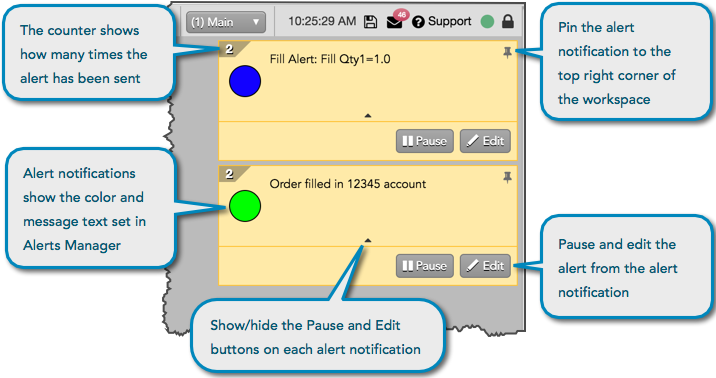
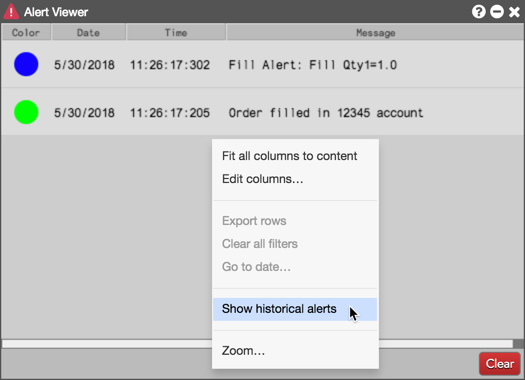
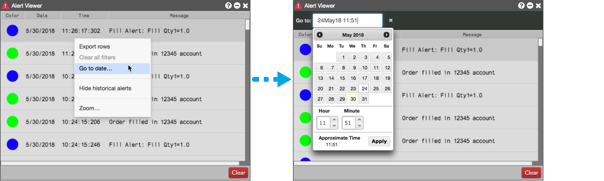
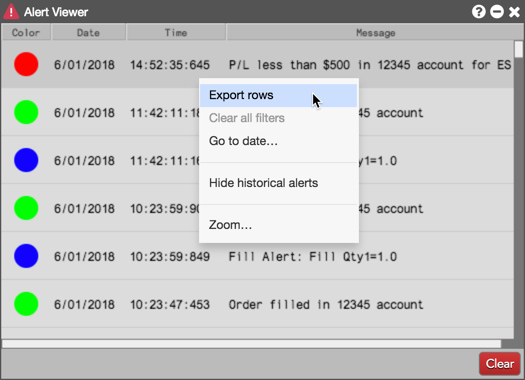

(Run) button in the Alert Manager.
(Run) button in the Alert Manager.When enabled, pop-up alert notifications appear in the top right corner of your TT workspace when the alert is triggered. Each notification shows the color and message text defined for the alert in the Alert Manager, and shows how many times the notification has been sent.

When a notification appears, you can pin it to your workspace and click the drop-down arrow on the alert notification to show the Pause and Edit buttons. When you click Edit, the Alert Detail screen opens and you can modify the alert.
When you click Pause in the alert notification, the alert is paused in the Alert Manager widget. The Status column displays "Paused", and the alert row is grayed out. To resume the alert and resume sending notifications for the alert, click the (Run) button in the Alert Manager.

To view all alerts that have triggered, right-click in the Alert Viewer and click Show historical alerts.

Alerts that appear after the Alert Viewer is opened or historical fills are shown can be cleared using the Clear button (historical alerts are not cleared).
To show historical alerts at a certain time and date, right-click in the Alert Viewer while viewing all alerts and click Go to date... in the context menu. This opens the Go to: date picker, which allows you to enter or select a time and date.

To export alerts to a CSV file, press Shift on the keyboard and select one of more alerts, then right-click and select export rows.
